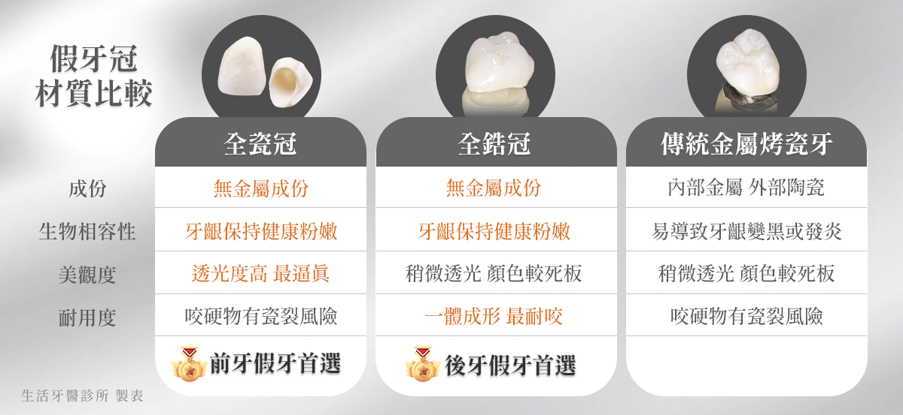
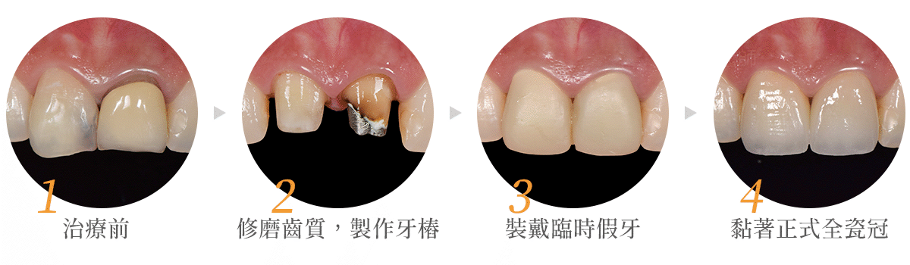
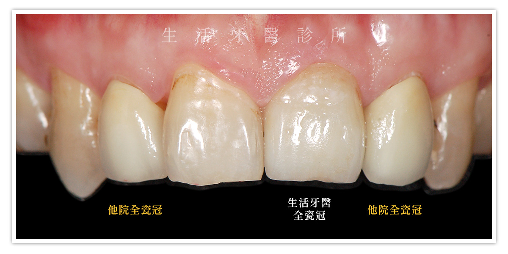

全瓷冠是什麼？
全瓷冠（All-Ceramic Crown）是一種以100%陶瓷材質製成的牙冠修復體(也稱作牙套、假牙冠)，完全不含金屬。由於其優異的透光性、自然色澤與高生物相容性，成為近年牙科美學修復的主流選擇。 傳統的金屬瓷冠雖具強度，但長期下來可能出現「黑邊」或牙齦染色的問題；而全瓷冠則可大幅提升美觀與舒適度，尤其適合安裝在前牙區。
為什麼選擇全瓷冠？
全瓷冠的最大優勢在於自然的外觀與優異的生物相容性，以下是幾項常見優點：
- 美觀性最佳的假牙材質：透光性佳，能模擬天然牙的色澤，幾乎與真牙無異，特別適合前牙區修復。
- 無金屬成分：不含金屬，降低過敏風險，也避免牙齦邊緣產生黑線。
- 密合度高：使用數位掃描與CAD/CAM技術，可達到精密製作與更高的密合度，減少細菌滲漏與蛀牙風險。
- 生物相容性佳：對牙齦友善且健康，較不會引發發炎或色素沉著問題。
- 耐用性強：現代全瓷冠材料強度高，正確使用下可使用10年以上。

什麼狀況下需要使用全瓷冠
全瓷冠不僅能保護剩餘齒質結構，也能改善牙齒美觀度。常見適用狀況包括：
- 根管治療後牙齒結構脆弱，需加強保護
- 大面積蛀牙或牙齒裂痕，需完整覆蓋
- 齒色異常，如四環黴素牙或氟斑牙
- 舊金屬瓷牙需更換，追求美觀自然
- 植牙假牙之重建
全瓷冠製作與安裝流程
全瓷冠的製作過程需高度精密，建議選擇具數位設備的診所。標準流程如下：
- 初診評估與X光診斷：確認牙齒結構、牙周健康與咬合條件。
- 牙齒修磨與數位口掃：修磨牙齒後使用口掃儀掃描牙齒，避免傳統取模不適感外，亦能提高精準度。
- 臨時假牙安裝：安裝臨時假牙以維持美觀及咀嚼功能。
- 個別化設計與製作：根據患者牙齒色階、形狀製作個人化全瓷冠。
- 試戴與黏著：確認全瓷冠的合適度與咬合後，正式黏合。
- 術後追蹤：定期回診檢查全瓷冠和口腔健康。

台中牙醫推薦哪裡做全瓷冠？
全瓷冠的製作過程考驗著操作精密性及醫師美感，在選擇牙醫院所前建議可先觀察以下幾點：
- 是否具備完整數位牙科設備（如口掃機）。
- 醫師對於牙齒的美感與您是否契合。
- 瓷塊材質是否來源清楚、具國際認證。
- 術前有無充分溝通與案例參考。
- 是否提供術後保固與回診追蹤。

即使同樣是「全瓷冠」，也會因為美感、操作細緻度、製程以及釉料選擇等各種看似微小的差距，而導致外觀和品質上的差異。生活牙醫的全瓷冠兼顧耐用及美觀，每一顆全瓷冠都以自然擬真為目標，有豐富成功案例照片作為見證，更提供全瓷冠2年安心保固，專業—就是我們對自己的自信。